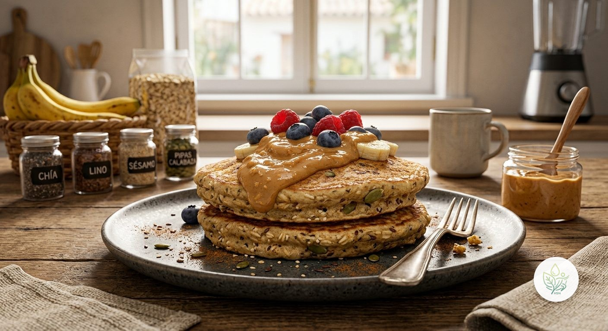

Tortitas de Plátano y Avena
AUn desayuno hecho puré con la batidora: plátano, avena, huevo y una mezcla de semillas que aportan fibra, proteína y grasas saludables — sin azúcar añadido y sin harinas refinadas.
El plátano maduro aporta todo el dulzor que necesita la receta, así que no hace falta azúcar añadido. La avena sustituye a la harina blanca de unas tortitas convencionales, sumando fibra y un índice glucémico más bajo. El huevo y la mezcla de semillas —lino, chía, sésamo y pipas de calabaza— convierten un desayuno típicamente solo de carbohidratos en un plato con proteína completa, grasas omega-3 y minerales como magnesio y zinc. Cocinadas en una sartén con poco AOVE, no con mantequilla, se mantienen ligeras sin perder ese punto crujiente por fuera y tierno por dentro.
Ingredientes (toca el nombre para ver su ficha)
- 120 g
- 75 g
- 60 g
- 50 g
- 1 g
- 5 g
- 5 g
- 5 g
- 5 g
- 5 g
Elaboración
- Bate el plátano, la avena (o los copos de avena, si no tienes harina de avena ya hecha), el huevo, la bebida de avena y la canela hasta conseguir una masa homogénea.
- Tritura las semillas de lino, chía y sésamo, y las pipas de calabaza —con un molinillo o mortero— y añádelas a la masa, mezclando bien.
- Calienta una sartén con un poco de AOVE a fuego medio.
- Vierte la mitad de la masa en la sartén y espera a que la tortita se despegue sola del fondo antes de darle la vuelta.
- Cuando se despegue también por el otro lado, retírala del fuego. Repite con el resto de la masa.
- Sirve con un topping opcional al gusto, como crema de cacahuete 100% natural o fruta fresca.
Información nutricional (receta completa)
De las grasas, 5 g son saturadas · de los carbohidratos, 16.4 g son azúcares · sodio: 77.7 mg